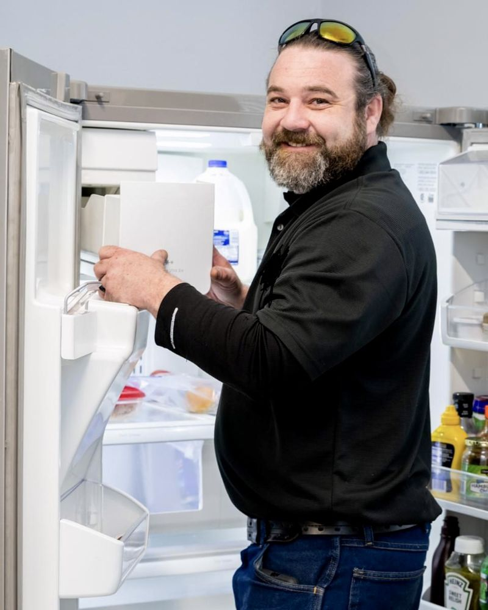

Frequently Asked Questions
What appliances do you repair?
I repair a wide range of household appliances including refrigerators, ovens, dishwashers, washing machines, dryers, and microwaves.
How do I schedule a repair service?
You can schedule a repair service by calling 1+ (513) 218-4694 or by visiting the Contact page on this website.
What are your service hours?
Service hours: Monday to Friday from 8:00 AM to 4:00 PM. Emergency repair services are available on weekends for urgent issues.
